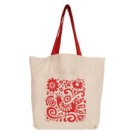

About Travel Tote Bags
Our travel totes are made from premium canvas or polyester, with extra compartments and zippers for convenience. Carry your laptop, books, or travel essentials in style.
Key Features
- Material: Heavy-duty canvas or polyester
- Spacious main compartment with inner pockets
- Sturdy handles and optional shoulder strap
- Lightweight, foldable, and easy to carry
- Custom colors and branding available
Applications
- Travel, office, college, and shopping
- Weekend getaways and gym
- Corporate gifting and promotional use
Why Choose JontyMart?
- Trendy designs and export quality
- Bulk orders and custom branding
- Fast shipping and reliable support
Care Instructions
Wipe clean with a damp cloth. For fabric bags, gentle hand wash is recommended. Air dry only.